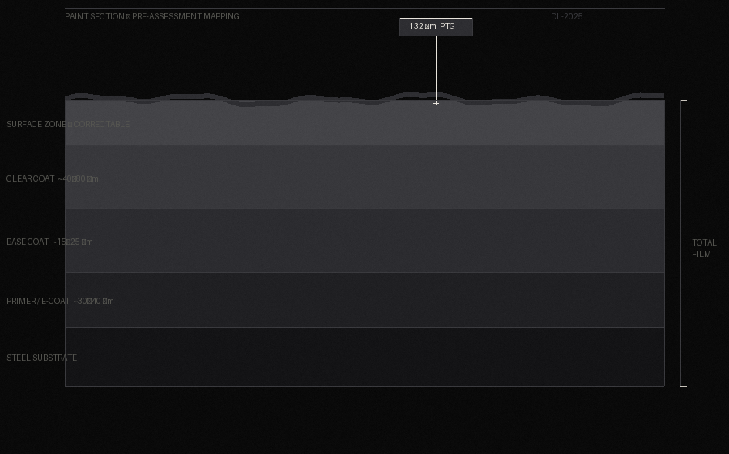

The Method — 03
The difference between a good correction and a true liquid mirror finish is not technique alone — it is instrumentation, environment, and a background that most detailers do not have. Every decision at Diamond Lux is measurement-driven.
Instrumentation
We do not estimate. We do not assume. Every vehicle is measured, documented, and assessed before a single abrasive touches the paint. The result is a proposal built on fact — not experience alone.

Paint Thickness Gauge (PTG) Mapping
Before any abrasive work begins, every panel is mapped with a paint thickness gauge. This tells us exactly how much paint is present, where previous corrections have been made, and how much latitude we have to work. No guesswork. No risk of cutting through.
Controlled Inspection Lighting
Defects that are invisible in natural light become precise targets under temperature-controlled inspection lighting. Every imperfection is identified and logged before work begins — and verified as resolved before the vehicle leaves our care.
Body Shop Background
Our technical foundation comes from professional collision repair and automotive refinishing environments — working alongside body shop specialists to develop deep expertise in modern paint systems, clear coat thickness management, and long-term vehicle preservation. We know what a fresh respray should look like, what factory overspray means, and how to read a panel that others miss.
Bespoke Proposals. No Standard Packages.
Every vehicle receives a custom assessment and a tailored proposal. We do not offer pre-priced packages because no two paint systems are the same. Your vehicle is quoted on what it actually needs — nothing more, nothing less.
Booking Process — 04
We do not provide pricing over the phone. Every lacquer is unique — and every proposal reflects what the specific vehicle in front of us actually needs. The process begins with an assessment.
The Process Begins Here
Bring the vehicle. We inspect the paint, map every panel, and tell you exactly what it takes to reach our standard. No obligation. Just an honest evaluation.
Sydney · Limited Intake Monthly